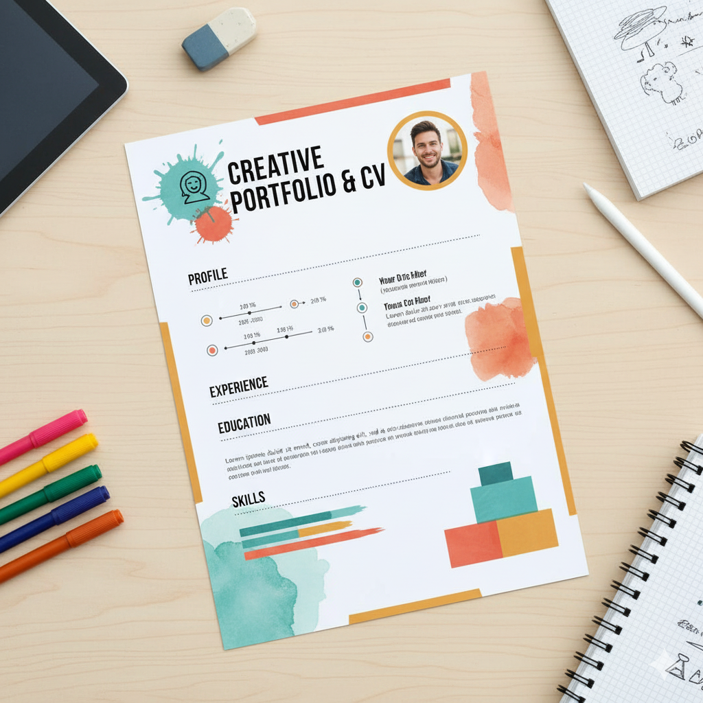
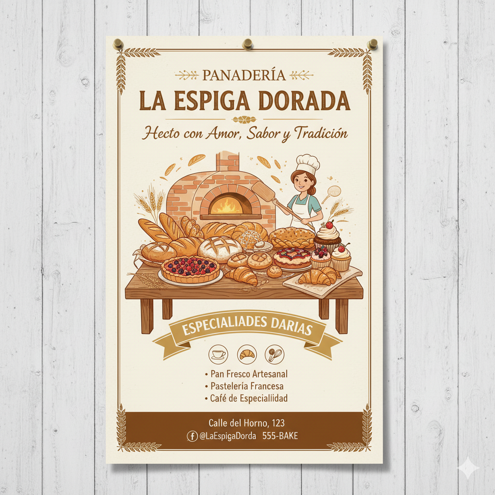
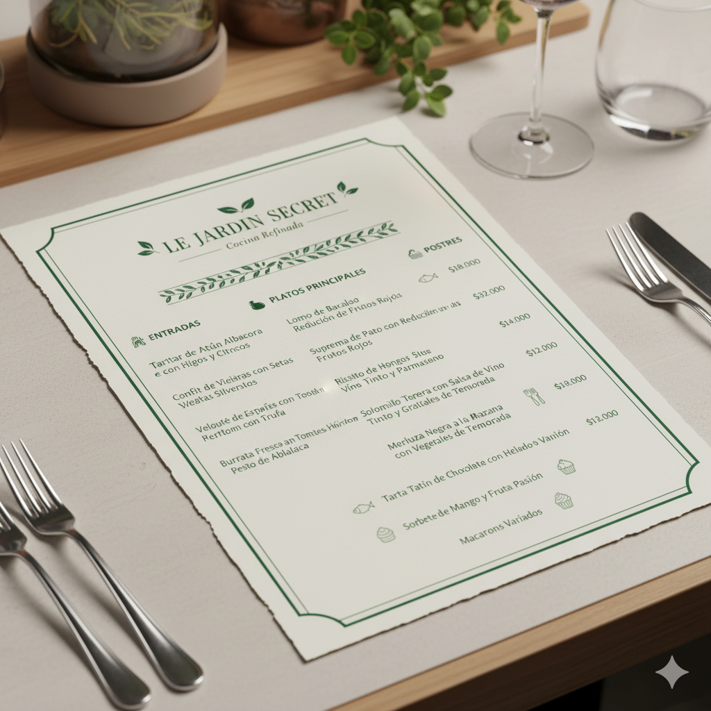
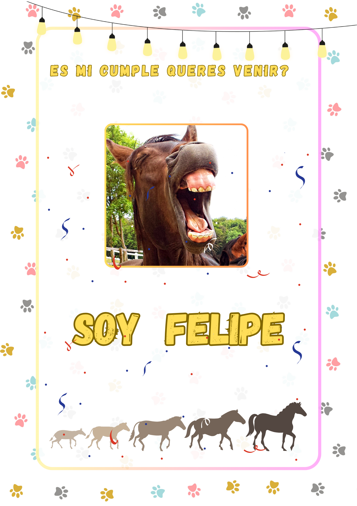

Portafolio Creativo
¡Bienvenido a mi espacio creativo! En esta sección, comparto una colección de mis diseños web, invitaciones, currículums y más. Navega por mis proyectos y descubre cómo puedo ayudarte a dar vida a tus ideas con un diseño funcional y atractivo.

Diseño Web

Currículums y Portafolios

Diseño de Material Impreso

Presentaciones y Álbumes
Invitaciones Digitales

Diseño de Menús
Diseño Web
¿Tu negocio necesita una presencia digital que cautive? Aquí te muestro ejemplos de cómo creo sitios web que no solo lucen increíbles, sino que también son fáciles de usar en cualquier dispositivo. Descubre la clave para una experiencia de usuario inolvidable.


Pachamama


Este proyecto consiste en la creación de la maqueta (o prototipo de interfaz de usuario) para una plataforma de e-commerce dedicada a un vivero. El objetivo principal es visualizar y estructurar la experiencia de compra en línea para los usuarios, presentando de manera atractiva y funcional la variedad de plantas, flores y productos de jardinería.
🌱 Tecnologías de Desarrollo Web
El desarrollo técnico de esta maqueta se ha realizado utilizando una combinación de tecnologías fundamentales en el diseño y desarrollo web moderno:
- HTML (HyperText Markup Language): Utilizado para estructurar el contenido y la semántica de cada página, definiendo elementos como encabezados, párrafos, listas, imágenes y formularios de compra.
- CSS (Cascading Style Sheets): Empleado para dar estilo visual a la interfaz, controlando la tipografía, los colores, el espaciado, los fondos, la disposición de los elementos (layouts) y la responsividad para asegurar una visualización óptima en diferentes dispositivos.
- JavaScript: Integrado para añadir interactividad dinámica, como carruseles de productos, validación de formularios, filtros de búsqueda, animaciones y cualquier funcionalidad que mejore la experiencia del usuario sin recargar la página.
- React: Se ha utilizado esta biblioteca de JavaScript para construir una interfaz de usuario modular y eficiente. React permite crear componentes reutilizables, lo que facilita el desarrollo, la gestión del estado de la aplicación y la escalabilidad del proyecto, garantizando una experiencia de usuario fluida y reactiva.
- Diseño Gráfico (Canva): Adicionalmente, el diseño gráfico y visual de la maqueta ha sido concebido y trabajado con Canva. Esta herramienta de diseño se ha empleado para crear elementos gráficos, iconos, banners promocionales y la paleta de colores general, asegurando una estética coherente y atractiva que refleje la frescura y naturaleza de un vivero, antes de ser implementados y adaptados en el código.
En resumen, esta maqueta representa un esfuerzo integral de diseño y desarrollo web para sentar las bases de una tienda en línea intuitiva, visualmente agradable y técnicamente robusta para un vivero.
Mio Sole


🌶️ Descripción Detallada del Proyecto de E-commerce de Especias
Este proyecto abarca la creación de la maqueta funcional y la arquitectura inicial de un e-commerce especializado en la venta de especias. El objetivo es establecer una plataforma digital completa que no solo muestre los productos (el frontend), sino que también gestione la lógica de negocio, los datos y el funcionamiento del servidor (el backend). La implementación se basa en una estructura Full-Stack, utilizando un conjunto de tecnologías clave para asegurar un desarrollo moderno, interactivo y escalable.
🖥️ Tecnologías de Desarrollo (Frontend y Backend)
El proyecto se sustenta en las siguientes tecnologías esenciales:
- HTML (HyperText Markup Language): Este lenguaje es el esqueleto de la aplicación. Se utiliza para estructurar y organizar todo el contenido de las páginas del e-commerce (listados de especias, descripciones de productos, carrito de compras, formularios de pedido, etc.), asegurando una correcta semántica para la accesibilidad y los motores de búsqueda.
- CSS (Cascading Style Sheets): Responsable de toda la apariencia visual y el diseño de la tienda. Se utiliza para estilizar la interfaz con colores cálidos y terrosos que evocan el tema de las especias, definir tipografías legibles y, crucialmente, implementar el diseño responsive. Esto garantiza que la plataforma se vea y funcione perfectamente en cualquier dispositivo (computadora, tablet o celular).
- JavaScript: Es el lenguaje que inyecta interactividad y dinamismo en el frontend. Se emplea para manejar las interacciones del usuario, como añadir productos al carrito sin recargar la página, aplicar filtros de búsqueda por tipo de especia, mostrar ventanas modales de confirmación o realizar animaciones sutiles para mejorar la experiencia de navegación.
-
Node.js: Esta es la plataforma de JavaScript del lado del servidor (el backend).
Node.js
se utiliza para construir la lógica de negocio robusta que un e-commerce requiere.
Sus responsabilidades incluyen:
- Gestionar el servidor web y las peticiones de los clientes.
- Conectarse y gestionar la base de datos de especias, inventario y usuarios.
- Implementar las APIs (puntos de acceso) para que el frontend pueda obtener la lista de productos, procesar los pedidos, gestionar la autenticación de usuarios y las pasarelas de pago.
🎯 Alcance de la Maqueta
Esta "maqueta" va más allá de un simple diseño visual, ya que incluye la arquitectura del servidor. En el frontend, se han definido y estilizado las pantallas clave: la página de inicio con productos destacados, la página de listado y detalle de cada especia, y el flujo completo del carrito de compras y checkout. En el backend, la integración con Node.js proporciona la capacidad de hacer esta maqueta completamente funcional al conectar la interfaz de usuario con la gestión de datos real del negocio de especias.
Diseño Percibido


🏗️ Descripción Detallada del Prototipo Web para Maestra Mayor de Obras
El proyecto consiste en el desarrollo del prototipo o maqueta de una página web profesional diseñada específicamente para una maestra mayor de obras (o arquitecta técnica). El objetivo es crear una presencia digital sólida que sirva como portafolio, muestre la gama de servicios ofrecidos (dirección de obra, reformas, tasaciones, etc.), y facilite el contacto con potenciales clientes, garantizando una visualización impecable en cualquier dispositivo.
🧱 Tecnologías de Desarrollo Utilizadas
La implementación de este prototipo se ha llevado a cabo utilizando un conjunto de tecnologías estándar y un marco de trabajo que aseguran eficiencia y un diseño adaptable:
- HTML (HyperText Markup Language): Este lenguaje constituye la estructura fundamental y la semántica de la web. Se utiliza para organizar el contenido clave, como la presentación de la profesional, el listado de proyectos realizados (portafolio), la descripción detallada de sus servicios y el formulario de contacto.
- CSS (Cascading Style Sheets): El CSS puro se aplica para establecer la identidad visual del sitio. Esto incluye definir una paleta de colores profesional (que podría evocar la solidez y la construcción), seleccionar tipografías que sean claras y legibles, y ajustar detalles de espaciado y alineación que refuercen la seriedad y el rigor de la profesión.
📐 El Rol Estratégico de Bootstrap
El uso de Bootstrap es la pieza central que acelera el desarrollo y garantiza la modernidad del sitio web:
- Bootstrap (Framework CSS/JavaScript): Se integra como un framework de desarrollo frontend que provee una colección de componentes prediseñados y un sistema de cuadrícula (Grid System) altamente eficiente.
- Diseño Responsive por Defecto: La característica más crítica es que Bootstrap hace que el diseño sea completamente responsive de manera automática. Esto significa que la web se adapta perfectamente al tamaño de la pantalla, ya sea en una computadora de escritorio, una tablet o un celular, algo esencial para que los clientes puedan revisar el portafolio en cualquier momento y lugar.
- Componentes Profesionales: Facilita la implementación rápida de elementos comunes en sitios profesionales, como menús de navegación fijos, carruseles de imágenes para mostrar proyectos, tarjetas o cards para describir servicios, y botones estandarizados, lo que resulta en una interfaz pulida y coherente con menos esfuerzo.
🎯 Beneficios del Prototipo
En conjunto, la combinación de estas herramientas da como resultado una maqueta web que es:
- Profesional y Estética: Con un diseño limpio y moderno adecuado para el sector de la construcción.
- Móvil Primero: Completamente optimizada para dispositivos móviles gracias a Bootstrap, lo que mejora la experiencia del usuario y el posicionamiento SEO.
- Base Robusta: Lista para ser utilizada como la base de un sitio web funcional.
Piedra Infinita

🍷 Descripción Detallada: Maqueta de la Aplicación Web "Piedra Infinita"
La maqueta de la aplicación web "Piedra Infinita" está diseñada para ser el hogar virtual y la principal plataforma digital de la bodega homónima. Su propósito fundamental es doble: promover y facilitar la adquisición de sus productos de alta calidad, y al mismo tiempo, resaltar el profundo compromiso de la bodega con el entorno natural, la filosofía de producción sostenible y la identidad de sus terroirs. La interfaz busca transmitir una sensación de elegancia, calidad y respeto por la naturaleza, elementos clave de la marca.
🎯 Objetivo y Propósito de la Aplicación
La plataforma sirve como un escaparate digital donde los usuarios pueden:
- Explorar el Catálogo: Navegar por la línea completa de vinos de la bodega, con descripciones ricas en detalles sobre la uva, el proceso de vinificación y las notas de cata.
- Narrativa de la Marca: Dedicar secciones a la historia de la bodega, la geología del viñedo (de ahí el nombre "Piedra Infinita") y las prácticas de sostenibilidad, fortaleciendo la conexión emocional con el consumidor.
- Experiencia de Usuario: Ofrecer una experiencia de navegación fluida y visualmente atractiva, permitiendo a los amantes del vino encontrar información clave rápidamente.
🖥️ Tecnologías de Implementación de la Maqueta
La interfaz ha sido implementada con un enfoque en la modernidad, la estabilidad visual y la completa adaptabilidad a cualquier dispositivo.
- HTML (HyperText Markup Language): Actúa como el esqueleto estructural de toda la aplicación. Se utiliza para la organización lógica del contenido, definiendo las secciones de la bodega, las fichas técnicas de cada vino, la galería de imágenes del viñedo y el diseño de la estructura de navegación.
- CSS (Cascading Style Sheets): Aplica el estilo visual y la atmósfera que requiere una marca de vino premium. El CSS establece la paleta de colores (probablemente tonos terrosos, borgoñas y blancos limpios), la tipografía elegante y la disposición de elementos para que el vino y el paisaje sean los protagonistas visuales.
- Bootstrap (Framework CSS/JavaScript): La elección de Bootstrap garantiza que la maqueta sea completamente responsive (adaptable). Esto es crucial para un producto premium, ya que asegura que la experiencia de navegación sea impecable, ya sea que el usuario visite la web desde una computadora de escritorio, una tablet o un teléfono móvil. Además, Bootstrap facilita el uso de componentes de interfaz estándar y elegantes, como carruseles para destacar cosechas, tarjetas de productos y menús de navegación profesionales.
En resumen, esta maqueta no solo es un diseño, sino una base técnica sólida que refleja la alta calidad y el compromiso de la Bodega "Piedra Infinita" con sus valores.
Galaxia


🍷 Descripción Detallada: Maqueta de la Aplicación Web "Piedra Infinita"
La maqueta de la aplicación web "Piedra Infinita" está diseñada para ser el hogar virtual y la principal
plataforma digital de la bodega homónima. Su propósito fundamental es doble: promover y facilitar la
adquisición de sus productos de alta calidad, y al mismo tiempo, resaltar el profundo compromiso de la
bodega con el entorno natural, la filosofía de producción sostenible y la identidad de sus terroirs.
La interfaz busca transmitir una sensación de elegancia, calidad y respeto por la naturaleza, elementos
clave de la marca.
🎯 Objetivo y Propósito de la Aplicación
La plataforma sirve como un escaparate digital donde los usuarios pueden:
- Explorar el Catálogo: Navegar por la línea completa de vinos de la bodega, con descripciones ricas en detalles sobre la uva, el proceso de vinificación y las notas de cata.
- Narrativa de la Marca: Dedicar secciones a la historia de la bodega, la geología del viñedo (de ahí el nombre "Piedra Infinita") y las prácticas de sostenibilidad, fortaleciendo la conexión emocional con el consumidor.
- Experiencia de Usuario: Ofrecer una experiencia de navegación fluida y visualmente atractiva, permitiendo a los amantes del vino encontrar información clave rápidamente.
🖥️ Tecnologías de Implementación de la Maqueta
La interfaz ha sido implementada con un enfoque en la modernidad, la estabilidad visual y la completa adaptabilidad a cualquier dispositivo.
- HTML (HyperText Markup Language): Actúa como el esqueleto estructural de toda la aplicación. Se utiliza para la organización lógica del contenido, definiendo las secciones de la bodega, las fichas técnicas de cada vino, la galería de imágenes del viñedo y el diseño de la estructura de navegación.
- CSS (Cascading Style Sheets): Aplica el estilo visual y la atmósfera que requiere una marca de vino premium. El CSS establece la paleta de colores (probablemente tonos terrosos, borgoñas y blancos limpios), la tipografía elegante y la disposición de elementos para que el vino y el paisaje sean los protagonistas visuales.
- Bootstrap (Framework CSS/JavaScript): La elección de Bootstrap garantiza que la maqueta sea completamente responsive (adaptable). Esto es crucial para un producto premium, ya que asegura que la experiencia de navegación sea impecable, ya sea que el usuario visite la web desde una computadora de escritorio, una tablet o un teléfono móvil. Además, Bootstrap facilita el uso de componentes de interfaz estándar y elegantes, como carruseles para destacar cosechas, tarjetas de productos y menús de navegación profesionales.
En resumen, esta maqueta no solo es un diseño, sino una base técnica sólida que refleja la alta calidad y el compromiso de la Bodega "Piedra Infinita" con sus valores.
BTTF


🚀 Arquitectura General y Filosofía de Diseño
El proyecto es una wiki interactiva temática de alta complejidad que funciona como una aplicación de una sola página (SPA) impulsada por JavaScript. Su filosofía se basa en la separación estricta de responsabilidades (HTML para la estructura, CSS para la presentación, JS para el comportamiento) y una arquitectura modular y escalable.
🧱 Estructura Semántica (HTML)
El HTML actúa como el esqueleto lógico y semántico del sitio, utilizando etiquetas de HTML5 para una mejor comprensión de la estructura por parte de los motores de búsqueda (SEO) y lectores de pantalla:
- Jerarquía de Clases: El documento utiliza etiquetas semánticas de HTML5 (`header`, `aside`, `main`, `footer`) para definir claramente la zona de navegación, contenido complementario y el área focal, demostrando una comprensión profesional de la estructura.
- Modularidad: Contiene 12 secciones principales con IDs únicos para navegación interna y **17 contenedores dinámicos que son llenados completamente por JavaScript, facilitando la gestión y el mantenimiento del contenido.
🎨 Estrategia de Diseño Visual (CSS)
El CSS crea una estética híbrida que combina el clasicismo de Wikipedia con la ambientación retro-futurista de los 80s y se enfoca en la responsividad:
- Layout Multicapa: El diseño se construye con 4 capas superpuestas (Fondo decorativo, Navegación sticky, Contenido principal y Overlays Modales) con un manejo preciso del `z-index`. Utiliza Flexbox horizontal para el container principal.
- Responsividad: Se utiliza una filosofía Mobile-first implícita usando técnicas avanzadas como CSS Grid con `auto-fit` y `minmax()` para adaptación automática de galerías. Un único media query principal gestiona el cambio de layout a columna en móviles.
- Tematización: Incluye un sistema de modo oscuro completo que se alterna mediante JavaScript, cambiando colores de fondo y texto para mantener el contraste y el mood.
⚡ Interactividad y Comportamiento (JavaScript)
El código es JavaScript vanilla puro (sin frameworks), controlando toda la lógica de negocio y la interactividad avanzada:
- Carga de Datos Robusta: El sistema utiliza la función `loadData()` para hacer fetch a un archivo `contenido.json`. Si falla, utiliza datos de respaldo (fallback data) codificados en el mismo JS (`useFallbackData()`), garantizando la funcionalidad.
- Sistemas Interactivos Complejos: El JS maneja múltiples sistemas como un Quiz Interactivo (validación de respuestas, feedback visual), un Mini-Juego con `canvas` (control de teclado, detección de colisiones) y una Calculadora de Viajes que gestiona fechas y calcula datos temáticos (1.21 GW).
- Optimización y Gamificación: Utiliza `setInterval`/`setTimeout` para contadores y el reloj en tiempo real, junto con funciones de cleanup. Incluye un sistema de logros (`achievements`) que se desbloquea al interactuar con el sitio.
🎯 Secciones Clave de Contenido
El área principal (`main`) se divide en 12 secciones temáticas, incluyendo las siguientes áreas de foco:
- INTRODUCCIÓN (`#intro`): Con un *Info-box* flotante y contadores dinámicos.
- ESTADÍSTICAS (`#estadisticas`): Muestra 4 cajas de datos generadas 100% por JavaScript.
- LA TRILOGÍA (`#trilogia`): Grid de 3 tarjetas de películas con interacción para ver sinopsis.
- DELOREAN (`#lorean`): Sección extensa con tabla de especificaciones técnicas y **ASCII Art** temático.
- CALCULADORA, QUIZ y MINI-JUEGO: Las secciones más interactivas, completamente dinámicas y controladas por JS.
En conclusión, este HTML implementa una wiki interactiva temática de nivel profesional que combina contenido editorial rico con funcionalidades web modernas.
Currículums y Portafolios
Tu trayectoria profesional es única y merece ser presentada de forma excepcional. Aquí encontrarás ejemplos de currículums y portafolios con diseños personalizados que te ayudarán a destacar tus habilidades y a causar una excelente primera impresión.
CV Creativo con Elementos Gráficos
CV Creativo con Elementos Gráficos (Para industrias Creativas, Menos ATS-Friendly)
Diseñado para roles donde la creatividad es clave (diseño, marketing, arte). Utiliza colores, tipografías más originales y elementos gráficos, lo que lo hace menos ideal para ATS, pero muy impactante visualmente.
- Estilo: Es un CV extremadamente visual, artístico y muy moderno. Está diseñado más como un "Portafolio" o Curriculum Vitae Gráfico que como un CV tradicional.
- Diseño: Domina el uso de colores, manchas de acuarela, y elementos gráficos como diagramas de burbujas, líneas de tiempo y barras de habilidad visuales (no textuales). Incluye una foto en un círculo con fondo colorido.
- Organización: La información parece distribuirse de forma muy libre y creativa en el espacio. Las secciones principales como PROFILE, EXPERIENCE, EDUCATION y SKILLS son visibles, pero el contenido dentro de ellas es mayormente gráfico.
- Filtro ATS: La compatibilidad con ATS es extremadamente baja (casi nula). El diseño depende fuertemente de imágenes, gráficos, diagramas, y texto no estructurado que el software ATS no puede interpretar o leer correctamente. El sistema probablemente solo recuperaría una pequeña porción del texto.
- Uso Recomendado: Absolutamente no apto para sistemas de aplicación en línea. Es perfecto para entregar personalmente, adjuntar a un portafolio digital, o usar en industrias puramente creativas (diseño gráfico, arte, moda) donde el reclutador es una persona que valora la expresión visual por encima de la estructura formal.
CV moderno y visual
CV con Toques de Color y Iconografía (Equilibrio entre Diseño y ATS)
- Estilo: Es un CV moderno y visual con un diseño de dos columnas (una principal para la información y una lateral de color azul para datos de contacto, habilidades e íconos).
- Diseño: Utiliza una tipografía limpia y clara. La sección lateral azul con íconos y la barra de título horizontal le dan un toque visualmente atractivo y bien estructurado.
- Organización: La información está bien segmentada en bloques con títulos claros como CONTACT, SKILLS, y EXPERIENCE.
- Filtro ATS: La estructura de dos columnas y el uso de elementos gráficos (íconos) pueden reducir su compatibilidad con los ATS, ya que estos sistemas a menudo tienen dificultades para parsear (leer) información en múltiples columnas o dentro de gráficos/tablas, pudiendo mezclar el orden o ignorar datos.
- Uso Recomendado: Ideal para roles creativos, diseño o donde la presentación visual es valorada, o para ser leído directamente por un reclutador humano.
CV Cronológico Clásico (Muy Compatible con ATS)
Este es el formato más tradicional y seguro para ATS. Presenta la experiencia laboral en orden cronológico inverso con encabezados claros y sin adornos.
- Estilo: Es un CV tradicional o clásico con un diseño simple, minimalista y enfocado en el texto.
- Diseño: Presenta un formato de una sola columna, predominantemente blanco y negro (o escala de grises), sin elementos gráficos o íconos que distraigan.
- Organización: Sigue una estructura lineal y cronológica (parece ser un CV cronológico inverso o funcional, dadas las secciones de EXPERIENCE, EDUCATION y SKILLS ordenadas de arriba abajo). Utiliza títulos de sección grandes y claros.
- Filtro ATS: Su formato de una sola columna, la tipografía estándar y la ausencia de gráficos lo hacen altamente compatible con los sistemas ATS. El texto es fácil de escanear y categorizar por el software..
- Uso Recomendado: Es el formato más seguro y recomendado para la mayoría de las industrias, especialmente en empresas grandes que utilizan ATS para el primer filtrado de candidatos.
Portfolio Minimalista
Esta imagen muestra un monitor con un diseño limpio y mucho espacio en blanco. Hay un título simple con el nombre del profesional y su área, una barra de navegación discreta y una sola imagen destacada del trabajo, con un llamado a la acción sutil.
- Espacio en blanco: Uso abundante de espacios en blanco (o "espacio negativo") para crear un diseño aireado y centrado.
- Tipografía nítida: Fuentes claras y fáciles de leer.
- Paleta de colores reducida: A menudo se limita a blanco, negro y un color de acento.
- Énfasis en el trabajo: El diseño se quita de en medio, permitiendo que las imágenes y los proyectos hablen por sí mismos.
- Uso Recomendado: Diseñadores gráficos, fotógrafos, artistas plásticos y cualquier profesional que quiera una presentación elegante y enfocada en la calidad visual de su trabajo.
- Grid Layout - Diseño de Malla: En la page "Proyectos", el estilo organiza el contenido de manera estructurada, facilitando la navegación y la visualización de múltiples proyectos. El contenido (generalmente miniaturas de proyectos) se dispone en filas y columnas uniformes, como una galería de Pinterest o Instagram.
Portfolio Minimalista, personal y profesional.
>- Énfasis en el Espacio y la Claridad: A pesar del color rojo vibrante (que es una elección audaz), el diseño general es muy limpio. Hay mucho espacio alrededor de los elementos clave (la foto, el texto, los botones), lo que permite que cada uno respire y se destaque.
- Contenido Directo y Conciso: La información principal (nombre, título profesional, una breve descripción) se presenta de manera directa. No hay elementos distractores.
- Navegación Simple: La barra de navegación es clara y sencilla, con enlaces estándar como "Home", "Services", "Skills", etc.
- Foco en el Individuo: La gran imagen de perfil y el texto "Hi, It's Alex" lo hacen muy personal, lo cual es común en portafolios minimalistas que buscan crear una conexión directa con el visitante.
- Paleta de Colores Definida: Aunque no es monocromático, utiliza una paleta de colores muy limitada (rojo y blanco principalmente, con toques de gris/negro en la imagen y los iconos). El rojo actúa como un color de acento muy fuerte que, a pesar de su intensidad, se usa de forma controlada.
Podría decirse que tiene elementos de un estilo Personal/Profesional, que a menudo se entrelaza con el minimalismo para crear una marca personal fuerte. En resumen, la limpieza, el enfoque en el contenido esencial y la ausencia de distracciones lo colocan firmemente en la categoría de Minimalista.
Portfolio (Dashboard Personal)
>Clasificación del Estilo
- Data-Driven: La forma en que se presenta la información es a través de visualizaciones de datos (gráficos de radar, barras, líneas, etc.), en lugar de solo texto o imágenes de proyectos.
- Dashboard Personal: Imita la estructura y la funcionalidad de un panel de control o un sistema operativo, ofreciendo una experiencia altamente modular y organizada.
- Ideal para: Desarrolladores backend, analistas de datos, ingenieros de software o cualquier profesional cuyo trabajo pueda cuantificarse y beneficiarse de una visualización estructurada.
Este estilo (Data-Driven (Basado en Datos) / Dashboard Personal ) es un paso intermedio entre el minimalismo (que es sencillo de estructurar) y las animaciones 3D complejas, ya que requiere incorporar y manejar librerías externas de visualización de datos.
Diseño de Material Impreso
Aunque vivamos en un mundo digital, el material impreso sigue siendo una herramienta poderosa. En esta sección, verás cómo mis diseños de volantes y tarjetas personales combinan creatividad y estrategia para dejar una impresión duradera.
Barbería
💈 Descripción del Diseño
El volante (o póster) tiene un estilo vintage o retro de cómic con colores vibrantes y fuertes contrastes (azul, rojo, amarillo y negro), lo que lo hace muy llamativo.
- Tema: Es un anuncio de una barbería y salón de estilismo llamado "The Golden Comb".
- Elementos Centrales: Muestra a un hombre y una mujer (barbero y estilista) trabajando. El barbero está cortando el cabello a un cliente, y la estilista está a su lado con tijeras. Están rodeados de herramientas de peluquería (secador, tijeras, navaja, peines, productos) que refuerzan el tema.
- Composición: Utiliza un fondo de rayas diagonales (sol o sunburst) en azul y negro que da un sentido de movimiento y dinamismo, dirigiendo la vista al centro de la imagen.
- Información Clave: En la parte inferior, sobre una franja de color, se detallan los servicios: "Cortes Clásicos," "Peinados Modernos," "Afeitado a Navaja," y "Coloración." También incluye información de contacto: un número de teléfono y una cuenta de Instagram.
En resumen, es un diseño impactante, nostálgico y audaz, perfecto para atraer a una clientela que busca un estilo clásico o moderno con una estética cool y retro.
Panaderia
🥐 Descripción del Diseño
Este volante/póster de panadería utiliza un estilo de ilustración suave y acogedor que evoca calidez, artesanía y tradición.
- Tema: Es un anuncio para la panadería "La Espiga Dorada", destacando su lema: "Hecho con Amor, Sabor y Tradición".
- Estilo Visual: Predominan los tonos marrones, dorados y beige, que refuerzan la idea de pan recién horneado y un ambiente rústico. El diseño general es clásico y enmarcado, con un borde de hojas que le da un toque elegante.
- Elementos Centrales: La imagen principal es una mesa rebosante de productos de panadería y pastelería (panes rústicos, croissants, tartas, muffins). Detrás, se ve un horno de ladrillo encendido y una panadera sonriente con un gorro de chef. Este conjunto subraya la autenticidad y el proceso artesanal.
- Información Clave: Una cinta dorada resalta las "Especialidades Diarias", listadas debajo junto a iconos representativos: Pan Fresco Artesanal, Pastelería Francesa y Café de Especialidad.
En resumen, el diseño es atractivo, detallado y transmite confianza y calidad, ideal para un negocio que quiere destacar la tradición y el sabor casero de sus productos.
Food Truck
💥 Descripción del Diseño
Este volante/póster de comida rápida utiliza un estilo de ilustración de cómic o caricatura, muy enérgico y con un diseño explosivo para captar la atención inmediatamente.
- Tema: Es un anuncio de un negocio de comida rápida (Food Truck) centrado en el eslogan: "¡EXPLOSIÓN DE SABOR!".
- Estilo Visual: Predominan los colores primarios y vibrantes: negro (fondo), amarillo brillante y rojo. El diseño es dinámico, con tipografía grande, gruesa y oblicua que simula movimiento y urgencia.
- Elementos Centrales: La imagen principal es un Food Truck amarillo con llamas rojas, manejado por un chef sonriente con un pulgar arriba. Alrededor del camión, los productos estrella (una hamburguesa gigante, papas fritas, un muslo de pollo y un combo de refresco y pollo) se muestran flotando o cayendo, lo que contribuye al tema de "explosión".
- Información Clave: Sobre una banda amarilla con el texto "COMIDA RÁPIDA - SABOR IRRESISTIBLE", se listan los productos: "Hamburguesas Jugosas," "Papas Crujientes," "Combos Familia," y "Postres Delicious." También incluye la ubicación, teléfono y redes sociales.
En resumen, el diseño es audaz, juvenil y altamente efectivo para un negocio de comida rápida. Utiliza gráficos potentes y colores llamativos para transmitir velocidad, energía y un sabor irresistible.
Mecánica
🛠️ Descripción del Diseño de la Tarjeta Personal
La tarjeta presenta un diseño moderno, directo y funcional, utilizando una paleta de colores distintiva para comunicar energía y experticia técnica.
- Estilo y Paleta de Colores: El diseño es moderno y limpio, dominado por el negro (fondo) y el blanco brillante (acento y texto). Esta combinación es ideal para el sector automotriz, pues evoca profesionalismo, advertencia y visibilidad.
- Elementos Gráficos: En el centro, el logo se distingue por el nombre del negocio ("The Mechanic") acompañado de un ícono de una llave inglesa (o herramienta similar), un símbolo claro de reparación y servicio automotriz.
- Composición: La tarjeta utiliza el espacio de manera eficiente, colocando el logo y el eslogan en el centro superior. Los datos de contacto están dispuestos en la parte inferior, usando íconos simples para identificar rápidamente el teléfono, la dirección y la web.
- Tipografía: Se utiliza una tipografía sans-serif fuerte, en mayúsculas, que refuerza el mensaje de solidez y confianza en el trabajo mecánico.
En resumen, el diseño es impactante y altamente temático, utilizando el contraste de negro y blanco para ser memorable y transmitir la especialización en el servicio de mecánica automotriz.
Abogado
⚖️ Descripción del Diseño de la Tarjeta Personal
La tarjeta presenta un diseño elegante, clásico y sobrio, con un enfoque minimalista que transmite profesionalismo y confianza.
- Estilo y Paleta de Colores: Utiliza un fondo blanco o muy claro, destacando los elementos de texto e íconos en tonos marrón sepia o dorado oscuro. Esta paleta evoca tradición y seriedad, propia del ámbito legal.
- Elementos Gráficos: En la parte superior izquierda, se encuentra el ícono de la balanza de la justicia, un símbolo universalmente reconocido para la abogacía. Hay un detalle gráfico sutil con una línea ornamental debajo del ícono y una rama decorativa en la esquina inferior derecha para un toque orgánico y sofisticado.
- Información Clave: El nombre ("Juan Leguizamon") y su especialidad ("Abogado Penalista") están en una tipografía cursiva que simula una firma, dándole un aire personal. A la derecha, una foto de perfil enmarcada en un círculo humaniza al profesional. Los datos de contacto (teléfono, email, dirección) están organizados en la parte inferior con íconos que facilitan su lectura.
En resumen, el diseño es profesional y pulcro, utilizando una estética tradicional y una tipografía elegante para proyectar credibilidad y experiencia en el campo del derecho.
Vivero
🌿 Descripción del Diseño de la Tarjeta Personal
La tarjeta presenta un diseño rústico, orgánico y fresco, utilizando elementos visuales que inmediatamente conectan con la naturaleza y la jardinería.
- Estilo y Paleta de Colores: El diseño es cálido y natural. Predominan los tonos verde olivo y amarillo sobre un fondo claro, evocando la tierra, el sol, las hojas y la serenidad de un jardín.
- Elementos Gráficos: El logo central es un sol estilizado , simbolizando la vida y el propósito del vivero ("Vivero Mio Solé"). Hay líneas decorativas que enmarcan y separan los elementos, aportando un aire artesanal.
- Composición: El logo y el nombre del vivero están centrados en la parte superior, destacando la identidad de la marca. La información de contacto se organiza de manera clara en la parte inferior de la tarjeta.
- Tipografía: Se utiliza una combinación de tipografías: una fuente principal manuscrita o script que da un toque personal y artístico, y una fuente sans-serif simple para la información de contacto, manteniendo la legibilidad.
En resumen, el diseño es armonioso y tranquilizador, utilizando la iconografía y la paleta de colores de la naturaleza para comunicar que el negocio se dedica al cultivo y venta de plantas.
Presentaciones y Álbumes
Cada historia merece ser contada de una manera especial. Aquí te presento una muestra de presentaciones y álbumes digitales que he diseñado, pensados para destacar momentos importantes, ya sea en una reunión de negocios o en un recuerdo familiar.
Sala Verde


🎨 Descripción General del Diseño (Álbum/Presentación)
El diseño es una presentación visualmente rica y temática, destinada al público infantil (probablemente un jardín de infantes o escuela primaria), utilizando un formato de álbum de recortes digitalizado.
- Estructura y Formato: Todas las diapositivas o páginas tienen el formato horizontal de un álbum de fotos o libro encuadernado. Esto se logra con una banda de textura de cuero oscuro con remaches dorados a la izquierda y, en muchos casos, un marco exterior que simula madera clara.
- Temática y Estilo Visual: El estilo es infantil, juguetón y educativo. Utiliza una combinación de ilustraciones sencillas (animales, plantas, elementos de la naturaleza) y fondos acuarelados o degradados que varían según la página (selva, cielo nocturno, colores vivos).
- Uso de Fotos: Las fotografías de los niños están incorporadas de manera creativa, a menudo con marcos que simulan polaroids (cámaras instantáneas) o recortes con formas orgánicas, dando un toque nostálgico y artesanal.
- Elementos Decorativos Recurrentes: Hay varios elementos que se repiten: esquinas doradas ornamentadas, ilustraciones de animales (mono, leopardo, oso), y elementos de juego o educativos (bloques, números, constelaciones).
- Contenido Específico: Las páginas varían entre introducciones temáticas (como "SALA VERDE 2024") y recuerdos fotográficos de actividades, finalizando con un mensaje de despedida y felicitaciones por las vacaciones sobre un fondo de animales de bosque.
En resumen, el diseño es creativo, cohesivo y afectivo, ideal para documentar y celebrar la experiencia de un grupo de niños en un entorno educativo, combinando fotografía con ilustraciones alegres.
Piedra Infinita


🖥️ Descripción General del Diseño (Presentación de Proyecto)
El diseño de esta presentación es notablemente híbrido, combinando diapositivas de estilo moderno y minimalista con diapositivas de estética retro futurista ("Vaporwave" o "Cyberpunk") para crear un contraste visual fuerte y dinámico.
Estilo "Vaporwave" (Diapositivas 1, 3, 5):
- Paleta de Colores: Utiliza colores de los años 90 (rosa, lila, naranja brillante) con un fondo abstracto de cuadros y líneas de neón.
- Composición: La información se enmarca dentro de interfaces simuladas de software antiguo (ventanas del navegador con barras de herramientas, paneles de capas, barras de desplazamiento), creando una estética de escritorio digital.
- Función: Estas diapositivas parecen funcionar como portadas o páginas de enlace, utilizando imágenes del proyecto ("Piedra Infinita") y capturas de pantalla de la aplicación web o el sitio promocionado.
Estilo Minimalista Técnico (Diapositivas 2, 4, 6):
- Paleta de Colores: Fuerte contraste de texto blanco sobre un fondo negro sólido, lo que garantiza máxima legibilidad.
- Composición: El texto principal es grande y ocupa gran parte del espacio. El único elemento gráfico es una sutil onda de líneas de neón azul cian en la parte inferior, que da un toque técnico y futurista.
- Función: Estas diapositivas se centran en el contenido textual (descripción de la bodega, propósito de la aplicación, resumen de venta), priorizando la transmisión de información clara y concisa.
En resumen, el diseño es audaz y creativo. Las diapositivas de texto negro y blanco establecen la seriedad del contenido, mientras que las diapositivas de estilo retro inyectan una personalidad única y memorable que capta la atención.
Bios


💻 Descripción General del Diseño (Presentación Técnica)
El diseño de esta presentación es educativo y funcional, enfocado en la claridad para explicar conceptos de informática técnica (BIOS, particiones, arquitecturas). Adopta una estética sencilla y clásica de diapositivas.
- Estilo y Paleta de Colores: El diseño es minimalista y de bajo contraste. Utiliza una tipografía oscura (negra) sobre un fondo blanco grisáceo o texturizado que simula papel (un fondo sutilmente granulado). Esta elección busca reducir la fatiga visual y mantener el foco en el contenido.
- Tipografía: La fuente utilizada es un tipo serif con un aspecto ligeramente escrito a mano o handwritten (como "Comic Sans" o similar), lo cual contrasta con la seriedad del tema técnico, dándole un tono más informal y accesible, típico de presentaciones para estudiantes.
- Jerarquía Visual: Los títulos (ej. "SETUP:", "Por Tipo de Partición") están en mayúsculas y negritas y son mucho más grandes que el texto del cuerpo, lo que establece una jerarquía de lectura muy clara.
Elementos de Contenido
- Imágenes: Incluye capturas de pantalla reales de interfaces técnicas (como el BIOS/CMOS Setup), diagramas explicativos a color (gráfico de bits, diagrama de particiones), y tablas de datos para ilustrar los conceptos.
- Distribución: El texto y las imágenes están bien espaciados. Las diapositivas a menudo dividen la información en columnas o secciones (como la diapositiva "32 BITS" vs "64 BITS") para una fácil comparación.
En resumen, el diseño es didáctico y sin adornos. Se concentra en la legibilidad y la precisión de la información técnica, utilizando gráficos ilustrativos y un fondo neutro para una experiencia de aprendizaje concentrada.
Abuela


👵 Descripción General del Diseño (Collages y Álbumes de Abuela)
El diseño general es emotivo, cálido y nostálgico, utilizando una variedad de estilos (desde el digital moderno hasta el *scrapbook* artesanal) para celebrar los momentos familiares y honrar a la figura de la abuela.
Estilo "Scrapbook" Vintage (Diapositivas 3 y 5)
- Paleta y Fondo: Predomina el marrón kraft, el beige y los tonos sepia/blanco roto, que simulan papel antiguo y envejecido.
- Elementos: Uso abundante de elementos de álbum de recortes (botones de madera, llaves antiguas, flores secas, cintas decorativas, *washi tape* digital, corazones y doodles dibujados a mano). Las fotos suelen tener un borde tipo Polaroid o una esquina redondeada, pegadas al fondo.
- Sentimiento: Transmite un aire de recuerdos atesorados y hechos a mano.
Estilo Collage Moderno (Diapositivas 1, 2 y 4):
- Paleta y Fondo: Los fondos son limpios, con patrones geométricos suaves (Diapositiva 4) o formas orgánicas y abstractas de colores pastel (verde menta, blush rosa, terracota, amarillo suave), dando un toque más moderno y fresco.
- Composición: Las fotos se presentan en rejillas rectangulares o mosaicos bien definidos. La Diapositiva 2 simula fotos esparcidas con bordes irregulares sobre un fondo de papel envejecido.
- Sentimiento: Más centrado en la celebración inmediata y la alegría (cumpleaños, momentos cotidianos).
- Tipografía: Se utilizan fuentes manuscritas o script (ej. "Tesoros de Abuela", "Momentos con Abuela") para aportar un toque personal y afectivo a los títulos, mientras que el texto de soporte suele ser simple y legible.
En resumen, el diseño es versátil pero siempre sentimental. Alterna entre la calidez rústica de un álbum físico y la pulcritud de un collage digital para crear un homenaje familiar.
Album de Casamiento


💍 Descripción General del Diseño (Collages de Boda)
El diseño es romántico, elegante y clásico, utilizando una paleta de colores neutra con ilustraciones florales dibujadas a mano para crear un marco formal y sentimental para las fotografías de boda.
- Estilo y Paleta de Colores: El fondo es blanco o hueso (marfil), lo que proporciona un lienzo limpio y permite que las fotos y las ilustraciones en blanco y negro destaquen. La paleta se limita al negro para los dibujos, y toques sutiles de color pastel (como dorado suave o rosa claro) para los íconos nupciales.
- Marco Floral (Elementos Decorativos): Las cuatro esquinas de la composición están decoradas con grandes ramos de flores e ilustraciones de hojas dibujadas con un estilo de boceto o línea simple en color negro. Esto da una sensación de marco artesanal y elegante.
- Iconografía Nupcial: Incluye íconos temáticos sutiles en la parte superior e inferior central de la página, como:
- 1. Anillos entrelazados (dorados).
- 2. Palomas (blancas).
- 3. Campanas de boda (tonos pastel).
- 4. Un coche de época (contorno simple).
- Diseño de las Fotos: Las fotografías (generalmente dos por página) están enmarcadas por un marco interior secundario que simula una corona de hojas y ramas en color plateado/gris, lo que añade profundidad y textura. El enfoque es limpio, presentando la acción (la ceremonia, la fiesta, los detalles) sin distracciones.
En resumen, el diseño es sofisticado y atemporal, ideal para un álbum de recuerdos de boda. Utiliza ilustraciones delicadas para acentuar la belleza de las fotografías sin robarles protagonismo.
Amor


🌹 Descripción General del Diseño (Collages Románticos y Literarios)
El diseño es romántico, literario y vintage, combinando la calidez de fotografías de pareja con elementos de papelería y citas famosas para crear un ambiente sentimental y profundo.
- Fondo y Paleta de ColoresEl fondo predominante en todas las diapositivas simula una pila de páginas de libros o documentos antiguos (en blanco y negro, con texto técnico o de imprenta). Esto crea una base visual con textura que evoca nostalgia y conocimiento. Los colores dominantes son los tonos sepia, marrón y crema.
- Elemento Central Simbólico Una rosa roja de tallo largo es el elemento central y recurrente. Se coloca sobre las páginas de fondo, actuando como un poderoso símbolo de amor, pasión y romance clásico.
- Citas y TipografíaEl diseño incluye citas famosas de autores literarios (Shakespeare, García Márquez, Tagore). Se utiliza una tipografía serif antigua o una fuente stencil ligeramente desgastada, reforzando la estética de documento histórico o carta de amor.
- Estilo de las FotosLas fotografías de las parejas tienen filtros que realzan los tonos cálidos (otoñales, atardeceres) y se enmarcan con bordes oscuros y gruesos, a menudo simulando tiras de película o polaroids. Los marcos suelen llevar pequeños detalles dibujados a mano, como corazones y flechas, o íconos de corazones en la parte superior.
- Detalles Gráficos Incluye pequeños doodles o ilustraciones dibujadas a mano, como corazones, aviones de papel, o figuras humanas estilizadas, para suavizar la composición y añadir un toque de intimidad.
En resumen, el diseño es profundo y artístico, ideal para celebrar el amor con un toque intelectual y atemporal, contrastando la delicadeza de la rosa y el romance de las fotos con la formalidad del fondo literario.
Recuerdos


🗺️ Descripción General del Diseño (Collages de Viajes y Recuerdos)
El diseño de esta colección de diapositivas es sentimental, artesanal y enfocado en la documentación de recuerdos y viajes, con una estética "Scrapbook" digital que utiliza texturas suaves y tipografía amigable.
- Estilo y Paleta de Colores El estilo es tierno y orgánico. Utiliza un fondo blanco roto o beige suave para dar una sensación de papel artesanal. La paleta de colores se basa en tonos tierra y pasteles (marrón, nude, rosa suave) para la tipografía, acentos y notas decorativas.
- Tipografía La fuente principal (ej. "CRONOLÓGICO", "RECUERDOS") es gruesa y redondeada, con una apariencia de escritura a mano infantil o casual, lo que añade un toque personal y cálido.
- Elementos de "Scrapbook" Digital Se utilizan muchos elementos gráficos que simulan ser pegatinas o notas pegadas:
- 1. Cintas adhesivas (washi tape digital) y trozos de papel roto y arrugado con textura de cuaderno.
- 2. Notas post-it con texto escrito a mano.
- 3. Corazones y símbolos de afect dibujados en negro (doodles).
- Composición Temática (Cronológico - Diapositiva 4) Se muestra una línea de tiempo horizontal simple que conecta fotografías de la pareja en diferentes años y ubicaciones (Turquía, Alemania, etc.), documentando su historia de viajes. El ícono de un mapa con un pin refuerza el tema viajero.
- Estilo de las Fotos Las fotografías están enmarcadas de varias maneras: con bordes que simulan Polaroids o tiras de película, o incluso como publicaciones de redes sociales (como Instagram), dando un toque moderno y de "diario".
En resumen, el diseño es personal y narrativo, ideal para crear un diario visual de recuerdos de pareja, utilizando una estética suave y DIY (hazlo tú mismo) que celebra la aventura y el afecto.
Invitaciones Digitales
Invitaciones Animadas

Haz que tus eventos comiencen con una chispa de creatividad. En esta galería, explora mis invitaciones digitales, tanto animadas como estáticas, diseñadas para capturar la esencia de cada celebración y emocionar a tus invitados desde el primer clic.
✨ Invitaciones Digitales Estáticas (Diseño Gráfico Fijo)
Las invitaciones estáticas son la opción perfecta si buscas elegancia atemporal, alta resolución y un diseño listo para compartir al instante. Son como obras de arte digitales que se mantienen fieles a la estética clásica de la papelería, pero con las ventajas de la era digital.
💍Boda
Esta invitación de boda es moderna y sofisticada, utilizando un fondo suave de flores blancas desenfocadas y un primer plano de anillos de oro rosa. Los nombres, Sandra y Daniel, se presentan con una tipografía limpia y un sutil símbolo mandala. Los detalles esenciales como la fecha (23 DICIEMBRE 2024) y la hora se organizan de forma legible en el lateral, resaltando una atmósfera de elegancia sencilla y concluyendo con la cita romántica: "A cada paso siempre juntos".
💍Boda
Esta invitación destaca por su diseño fresco y minimalista en tonos azul cielo y verde lima pastel, enmarcada por un borde decorativo de hojas y ramas. En el centro, una silueta de la pareja se encuentra bajo la exclamación "¡Si Acepto!". El diseño simple lista la fecha (23/12/2025) y los detalles de la jornada, incluyendo la hora y ubicación de la Ceremonia y el posterior Almuerzo en Los Olivos Restaurant, con la información de confirmación de asistencia en la parte inferior, y un pequeño detalle de Cupido que refuerza el tema romántico.
💌 15 Años
Esta invitación de cumpleaños de 15 años presenta un diseño elegante y floral con predominio de tonos azules y rosados pálidos, en un estilo de acuarela. El marco principal es una guirnalda de flores que rodea una fotografía central de la festejada, María, sonriente y vestida de jeans, con una banda de "Birthday Girl", en lo que parece ser una fiesta animada. El texto está en español, con la frase "Te invito a mis 15" en la parte superior. El nombre de "María" destaca en una caligrafía cursiva y fluida de color azul. Debajo se especifican los detalles del evento: Sábado 13 de julio en el Salón Violetas, con la dirección y la hora (21 hs), y concluye con un afectuoso "¡Te espero!". La composición es romántica y a la vez juvenil y moderna, equilibrando lo tradicional de la ocasión con un estilo actual.
🦋Infantil
Esta es una invitación de cumpleaños infantil, tierna y colorida, ideal para una niña pequeña. El diseño
tiene un fondo de colores pastel difuminados (rosa, verde menta, amarillo) que crea un ambiente suave y
alegre. Está decorada con elementos de la naturaleza, incluyendo mariposas en tonos rosa y azul celeste,
y detalles de brillo dorado en la parte superior.
En el centro, la fotografía de la festejada (una bebé sonriente con corona) está enmarcada por una
guirnalda floral vibrante. En la parte inferior, hay un grupo de flores y mariposas que añaden un toque
dulce y primaveral. El texto es simple y directo: "Te invito a mi fiesta ¡DE CUMPLEAÑOS!", e incluye la
fecha (FEBRERO 19) y la hora (17 HS), junto con la información para confirmar asistencia. El diseño
general es encantador, caprichoso y muy femenino.
🕹️Infantil
Esta invitación de cumpleaños para Daniel es enérgica y moderna, inspirada en videojuegos retro y héroes. El fondo azul es de píxeles y el título "SÚPER DANIEL" es audaz. La foto del cumpleañero está enmarcada en una consola de juegos amarilla, y los detalles clave como la fecha (19/02/37) y la hora se destacan en un óvalo negro. El diseño es colorido y perfecto para un fanático de los videojuegos de 8 bits.
💖Mascotas
Una invitación tierna y muy dulce, perfecta para celebrar a la consentida Racumina. El diseño baña la página en un fondo de colores pastel de ensueño, decorado con gatitos adorables de estilo cartoon. En el centro, un gran pastel rosado promete una fiesta de ensueño. Con un toque de cariño, te indican dónde esperan verte y el número para confirmar tu asistencia. ¡Un diseño sencillo y lleno de alegría gatuna!
🐶Mascotas
¡Prepárense para la fiesta más tierna! Esta invitación es una explosión de alegría y cariño para celebrar el cumpleaños de Luna. Sobre un fondo pastel suave, el diseño está lleno de ilustraciones adorables: un cupcake sonriente con una velita, un gato fiestero con gorrito y confeti, un conejillo de indias con globos y un perrito feliz con regalos. Con un aire juguetón y muchas huellas de patitas de colores, te invitan con emoción a esta "fiesta de mascotas", indicando la fecha y el lugar con mucha ternura. Es una invitación cálida y divertida que promete mucha diversión animal.
🥂Mayores
Esta invitación es una declaración de festejo con mucha personalidad y humor. Sobre un fondo negro dramático, el diseño grita celebración adulta al invitarte a honrar a "don asado y el señor vino". Con un toque de audacia, el centro muestra dos espadas cruzadas sobre un fuego ardiente, reflejando el espíritu guerrero del cumpleañero, Daniel. Sus 40 Años se destacan con energía. En las esquinas, racimos de uvas y simpáticas jarras de vino le dan el marco perfecto para una reunión cálida y divertida donde la buena comida y la mejor compañía son las protagonistas..
🚀 Invitaciones Digitales Animadas (Experiencia Multimedia)
Las invitaciones animadas son la opción ideal para causar un impacto memorable, transmitir energía y emoción de forma dinámica. Convierten la simple invitación en una experiencia de prelanzamiento del evento.
Boda
Este encantador video anuncia la unión de Sandra y Daniel con una delicada estética en tonos lavanda y detalles florales. La invitación guía a los invitados a través de los momentos clave del evento, desde la emotiva ceremonia religiosa hasta la celebración en el salón. Culmina con una preciosa imagen de los novios, transmitiendo alegría y la promesa de un día inolvidable. Es la manera perfecta y moderna de convocar a sus seres queridos a compartir este momento tan especial.
Francisca
Este delicado video-invitación, en tonos turquesa y con motivos de mariposas y flores, celebra la llegada de los 15 años de Francisca. El clip presenta a la hermosa quinceañera en su espléndido vestido, seguida de los detalles esenciales del evento. La invitación transmite un sentimiento de alegría y una bienvenida cálida. Es una forma encantadora y moderna de convocar a los seres queridos a compartir este hito inolvidable.
Infantil
Este alegre video-invitación transporta a los invitados a una divertida aventura con monos juguetones, jirafas y leones, celebrando el primer año de Sandra. La animación, de temática selvática y colores vibrantes, anuncia el gran festejo en el Salón "Estrella del Sud". Es la manera perfecta de invitar a familiares y amigos a unirse a la exploración de un día lleno de juegos, risas y magia infantil. ¡Una celebración inolvidable para la pequeña aventurera!
Mascotas
Este divertido y animado video anuncia la celebración del quinto cumpleaños de Mario, el adorable anfitrión felino. Con un diseño colorido y lleno de estrellas y huellitas, la invitación destaca a Mario y el gran pastel de cumpleaños. El clip proporciona todos los detalles necesarios, incluyendo la fecha y la dirección del festejo. Es la manera más creativa y dulce de invitar a sus amigos a compartir un día lleno de maullidos y alegría.
Mayor
Esta audaz invitación con temática de fiesta celebra los 40 años de Ricardo con un tono irreverente y lleno de energía. El video, en un elegante esquema de negro y dorado, desafía el paso del tiempo e invita a celebrar con copas y mucha diversión. El clip proporciona todos los detalles para la gran noche, desde la fecha hasta el lugar del encuentro. Es la manera perfecta de convocar a amigos a una celebración inolvidable, demostrando que ¡la fiesta recién comienza!
Nara
Este video-invitación, lleno de alegría y con un aire retro y festivo, anuncia la "Fiesta de Divorcio de Nara" como un nuevo y emocionante comienzo. El diseño colorido y dinámico, adornado con copas de champagne, es una clara señal de que es momento de celebrar la libertad. El clip detalla la hora y la ubicación, invitando a los amigos a unirse a la pista de baile y brindar por esta nueva etapa. Es una forma audaz y positiva de dar inicio a un nuevo capítulo.
Soy Felipe
Este video-invitación, lleno de humor y color, anuncia la fiesta de cumpleaños de Felipe, el equino más alegre. Con un divertido montaje y un diseño vibrante con huellas de animales, el clip asegura risas desde el primer momento. La estrella del evento, con su amplia sonrisa, te invita a compartir un día especial lleno de buena energía y sorpresas. Es una invitación única que garantiza un festejo inolvidable.
Diseño de Menús
¿Tus platos merecen un menú que despierte el apetito y eleve la experiencia? Aquí te muestro ejemplos de cómo creo menús que no solo enumeran, sino que también venden y guían al comensal. Descubre la clave para una carta visualmente irresistible, optimizada para la rentabilidad y que cuenta la historia de tu cocina.
🥐 Un Rincón de Sabor y Calidez
Este menú de "El Crumb Diario" te invita a un momento de puro placer y confort. Diseñado con un encanto clásico y rústico, promete "Handcrafted Goodness" ("Bondad Hecha a Mano" o "Delicia Artesanal") y lo cumple. Te tienta con el aroma de la Repostería Fresca, desde crujientes Croissants hasta tartas y Muffins. Luego te envuelve con el calor de su sección de Café & Té, donde un sorbo de Cappuccino o Chocolate Caliente es la excusa perfecta para hacer una pausa. Es un menú sencillo y acogedor que te recuerda el placer de las cosas bien hechas, horneadas "Baked with Love" ("Horneadas con Amor").
🍨 El Viaje a la Felicidad Dulce
Este menú de "La Heladería Encantada" es una invitación a escapar a un mundo de frescura y alegría. Con un diseño que evoca la nostalgia y la promesa de "Tu Escape Dulce", te transporta a la niñez. Te tienta con Sabores Clásicos y luego te sorprende con Sabores Especiales y los Árboles (Toppings), permitiendo crear el postre de tus sueños. Al llamarles "Árboles" a los toppings, la heladería crea una imagen mental de que tu helado es un pequeño "jardín" o "paisaje" comestible. Es como si el helado fuera el suelo y tú le añades tus propios "árboles" (de chocolate, nueces, frutas, etc.) para hacerlo crecer en sabor y diversión. El menú se completa con Tragos Refrescantes, perfectos para acompañar esos momentos de placer. Es un manifiesto colorido y encantador para celebrar el dulce arte del helado.
🌿 Un Viaje Secreto de Sabores
Este menú de "Le Jardin Secret" es una promesa de elegancia y sofisticación en la cocina, un auténtico jardín de delicias refinadas. Enmarcado por un delicado borde verde que evoca la naturaleza, te invita a una experiencia culinaria inolvidable. Cada plato es un susurro de arte, desde el Lomo de Búfalo hasta el Velouté de Errotes con Trufa. Es un menú que te transporta con su belleza sutil y te tienta a descubrir Platos Principales y Postres que son verdaderas obras maestras, celebrando el placer de la buena mesa.
🍕 El Abrazo Cálido de Nápoles
Este menú de "Pizzeria Napoletana" es una promesa de tradición y autenticidad, evocando el sabor de una receta ancestral. Con un diseño que simula un pergamino antiguo, te transporta a una cocina con Horno de Leña. Te invita con pasión a elegir entre sus queridas Pizzas Rojas (con salsa de tomate) como la clásica Marinara o la tentadora Capricciosa. Pero también te anima a descubrir la magia de sus Pizzas Blancas, como la lujosa Tartufo. Es un menú cálido y rústico que celebra el arte de la pizza, horneada con el corazón.
🍗 El Sabor de Hogar Calentito
Este menú de "El Pollo Dorado" es una promesa del confort y el sabor familiar que tanto nos gusta. Con un diseño limpio y apetitoso, te invita directamente al placer de sus Especialidades Rotisería, donde el Pollo Asado es el rey indiscutible, jugoso y dorado, esperando ser devorado. Te ofrece la calidez de un Menú del Día completo, y te permite personalizar tu fiesta de sabores con una variedad de Acompañamientos y ricas Salsas. Es un menú sencillo y honesto que te hace sentir como si estuvieras en casa, disfrutando de la mejor comida casera.
🍔 El Placer Culpable Perfecto
Este menú de "El Burger Joint" es una invitación directa a la diversión y el antojo, con un diseño vibrante que te hace desear comer al instante. Con un estilo retro y juguetón, te tientan sus platos estrellas: la Doble Cheddar o el Cuarto de Libra. Pero la verdadera fiesta empieza con sus Acompañamientos Crujientes, desde Papas Fritas y Aros de Cebolla, hasta las irresistibles Papas Cargadas. Es un menú audaz y delicioso que promete una escapada de sabor perfecta, culminando con un refresco o un cremoso Batido para el final feliz.
🍸 La Magia de la Hora Dorada
Este menú de "The Golden Hour" es una promesa de glamour y una noche inolvidable. Enmarcado en un elegante negro y blanco que evoca el lujo clásico, te invita a un viaje por el mundo de los Cócteles y Licores. Te tienta con sus sofisticados Cócteles de Autor, como el vibrante Aperol Spritz o el profundo Old Fashionshad. Y para los amantes de lo atemporal, ofrece las Clásicas, como el refrescante Mojito o la seductora Margarita. Es un menú distinguido y envolvente que celebra el arte de la mixología y te invita a brindar por los mejores momentos.